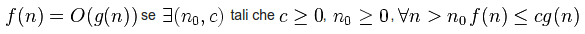
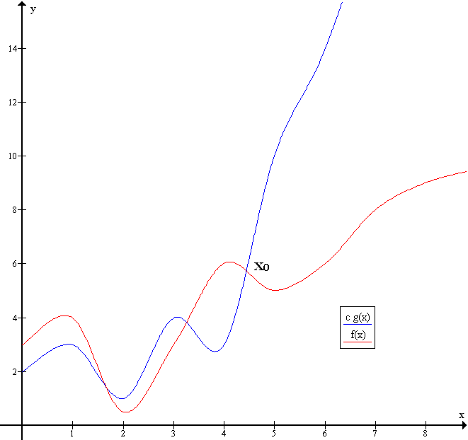
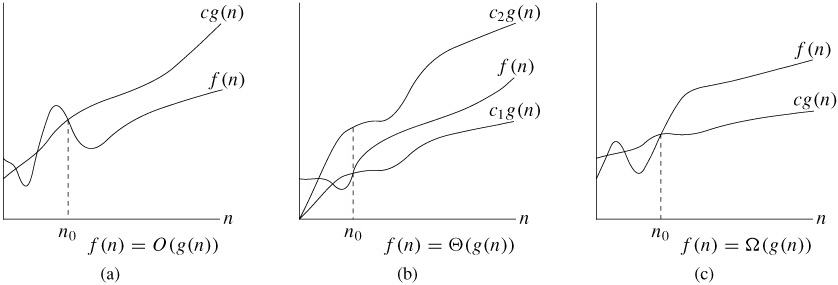
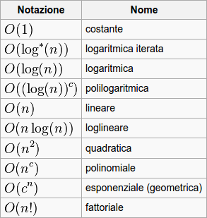
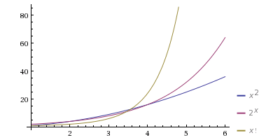
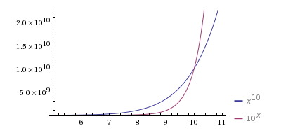
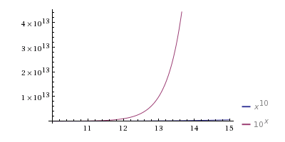
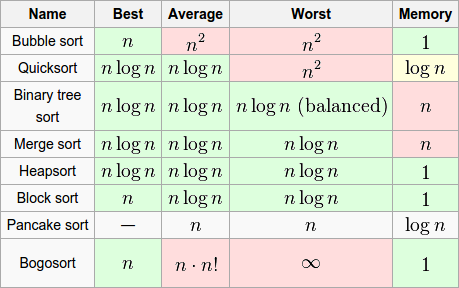
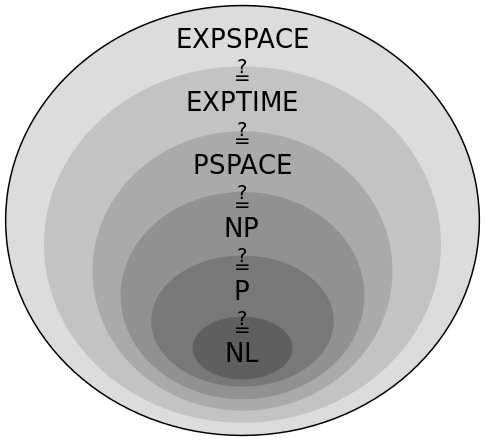

Computer science introduction
Lesson 5
Overview
- Basic algorythms & Control flow structures
- Data structures
- Big O & Complexity analysis
- Object Oriented Programming
- Parallelism & Concurrency
Premesse
Proprietà di un algoritmo
- atomicità
- non ambiguità
- finitezza
- terminazione
- effettività
Complessità computazionale
Risorse minime necessarie (tempo di calcolo e memoria) per la risoluzione di un problema
Misurazione delle risorse
Indipendente dalle tecnologie utilizzate
Tempo
input di dimensione n → risultato in f(n) passi
Spazio
input di dimensione n → utilizza f(n) celle temporanee di memoria
Misurazione delle risorse
esempio
$input = [1,2,3];
for ($x = 0; $x < count($input); $x++) {
echo "Il valore è " . $input[$x];
}
Tempo: f(n) = (n + 1) + n = 2n + 1
Spazio: f(n) = 1
$input = 10;
for ($x = 1; $x <= $input; $x++) {
$array = range(1, $x); // array(1, 2, .. , $x);
for ($y = 0; $y < count($array); $y++) {
echo "Il valore è " . $x * $array[$y];
}
}
Tempo: f(n) = (n + 1) + (2 + 3 + .. + n + n+1) + (1 + 2 + .. + n)
Tempo: f(n) = ½(n2 + n) + ½(n2 + 3n) + n + 1
Tempo: f(n) = n2 + 3n + 1
Spazio: f(n) = n
Big O notation
Misurazione troppo dettagliata, approssimo
Stima asintotica

"La funzione f(n) da un certo n in poi cresce al più come la funzione g(n)"

Big O notation
esempio
$input = [1,2,3];
for ($x = 0; $x < count($input); $x++) {
echo "Il valore è " . $input[$x];
}
Tempo: f(n) = O(n)
Spazio: f(n) = O(1)
$input = 10;
for ($x = 1; $x <= $input; $x++) {
$array = range(1, $x); // array(1, 2, .. , $x);
for ($y = 0; $y < count($array); $y++) {
echo "Il valore è " . $x * $array[$y];
}
}
Tempo: f(n) = O(n2)
Spazio: f(n) = O(n)
Big O notation
valutazione di un algoritmo
- caso ottimo
- caso peggiore
- caso medio
foreach ($input as $value) {
if ($value == 1) {
break;
}
}
$input = [1,2,3,4,5];
$input = [5,4,3,2,1];
$input = [2,5,1,3,4];
Big O notation
and friends

- O grande (a): limite superiore
- Omega grande (a): limite inferiore
- Theta grande (a): limite inferiore e superiore
Big O notation
ordini di funzioni

computational problems can be feasibly computed on some computational device only if they can be computed in polynomial time
Tesi di Cobham
Big O notation
ordini di funzioni



Big O notation
comparazione di algoritmi

Vari algoritmi di ordinamento
Classi di complessità
Raggruppo i problemi in classi
TIME(f(n)): risolvibili da un algoritmo che opera in tempo f(n)NTIME(f(n)): risolvibili da un algoritmo non deterministico che opera in tempo f(n)SPACE(f(n)): risolvibili da un algoritmo che opera in spazio f(n)NSPACE(f(n)): risolvibili da un algoritmo non deterministico che opera in spazio f(n)

Classi di complessità
L = SPACE(log(n))NL = SPACE(log(n))P = TIME(nk)NP = NTIME(nk)PSPACE = SPACE(nk)NPSPACE = NSPACE(nk)EXP = TIME(2nk)

Problema del commesso viaggiatore
data una rete di città, connesse tramite delle strade, trovare il percorso di minore lunghezza per visitare tutte le città una e una sola volta
Algoritmi esatti
- brute-force (
O(n!))
- branch and bound / branch and cut: ~50/200 città (
O(n22n))
- cutting plane: 33.810 città → 15,7 anni)
Algoritmi approssimati (euristiche)
"alta" probabilità di produrre una "buona" soluzione "velocemente"
/